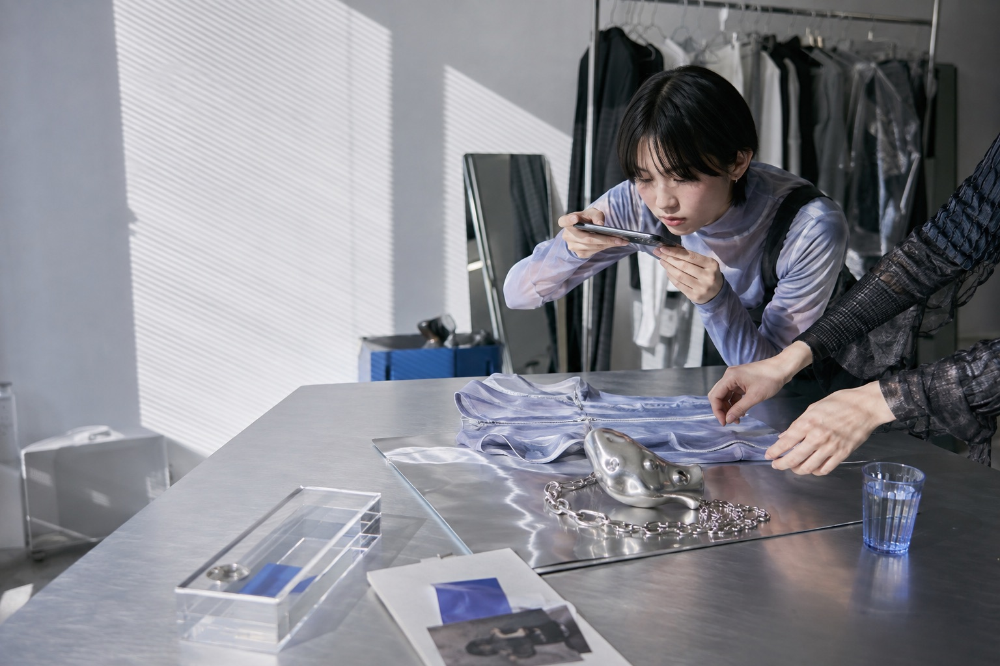
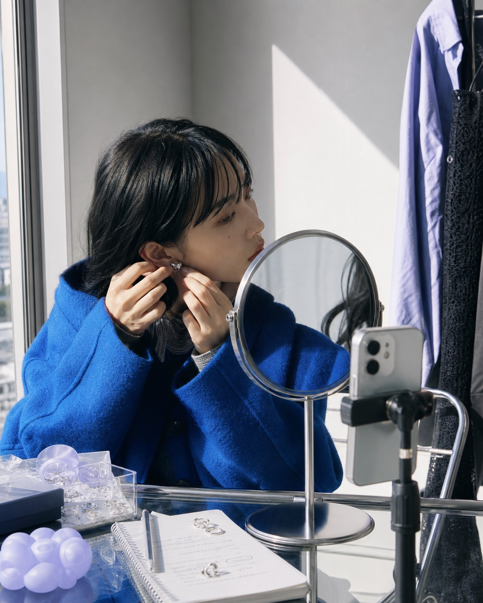

01
UNDERSTANDまず、
まず、
世界観を読む。
新商品、客層、価格帯、過去の発信を整理。誰に届けたいかを最初に揃えます。

CREATOR SEEDING / TOKYO
ブランドの世界観を、
届く人へ。
WHAT WE DO
選定だけで終わらない。
施策が動くところまで伴走します。
FUR（ファー）は、日本の小〜中規模ファッション・アクセサリーブランドに特化したクリエイターシーディング／インフルエンサーシーディングサービスです。
ブランド理解から候補選定、DM・メール、ギフティング調整、投稿確認、簡易レポートまでをひとつの流れで運用します。
ONE FLOW / FIVE MOVES
01 — 05
01
新商品、客層、価格帯、過去の発信を整理。誰に届けたいかを最初に揃えます。
02
フォロワー数だけで選ばず、投稿の空気、ファンとの距離、ブランドとの相性を見ます。
03
DM・メールで個別にアプローチ。返信を追い、条件と温度感をブランドへ返します。
04
ギフティング、報酬、発送、PR表記、投稿予定。必要な確認を一本化します。
05
返信数、承諾数、発送数、投稿状況を整理。小さな実施を次の判断材料に変えます。

THE RIGHT FIT
大きなリーチより、ブランドを自然に着こなせること。FURは、投稿の文脈まで読んで候補を選びます。
FOUNDING PILOT / 01 BRAND ONLY
募集中初回テスト企業を1社募集しています。範囲を絞り、運用費0円で、実際に動く施策を一緒に検証します。
最初は小さな候補群で、反応と相性を見ます。
初回の運用費は0円です。施策後、もし内容にご満足いただけたら、任意で1万円をいただければ幸いです。
返信・承諾・発送・投稿状況を簡潔にまとめます。
※ 0円になるのはFURの運用費です。クリエイター報酬、商品代、送料はブランド側のご負担となり、実費がある場合は先に予算をお預かりします。
CLEAR SCOPE
役割を明確にして、施策を軽くします。
BUILT FOR
START SMALL / LEARN FAST
ブランド名と検討中の商品だけで大丈夫です。下の内容をコピーして、ご利用のメールやDMからお送りください。
ブランド名：
商品・コレクション：
希望時期：
クリエイター施策で試したいこと：
初回相談はこちらのメールアドレスで受け付けています。